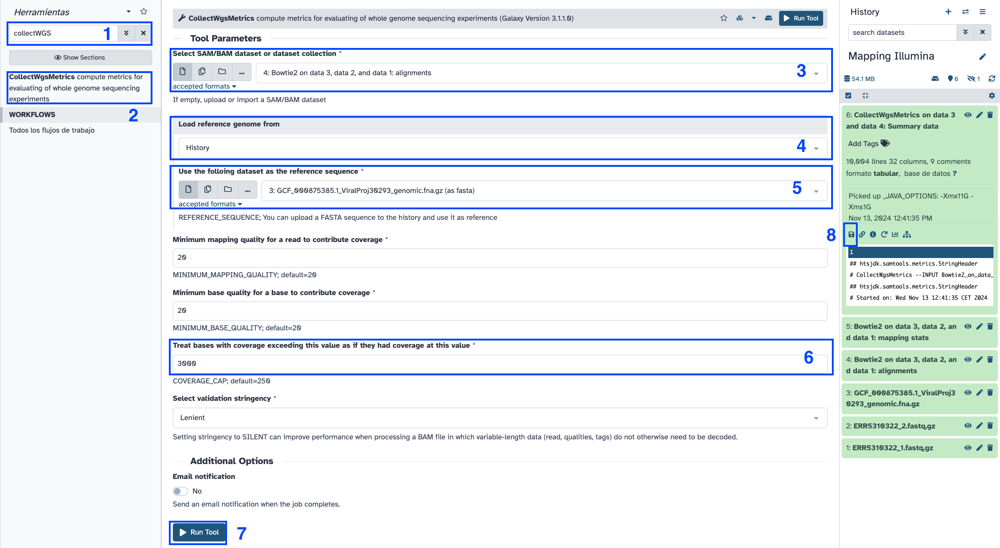

| Title | Galaxy |
|---|---|
| Training dataset: | PRJEB43037 - In August 2020, an outbreak of West Nile Virus affected 71 people with meningoencephalitis in Andalusia and 6 more cases in Extremadura (south-west of Spain), causing a total of eight deaths. The virus belonged to the lineage 1 and was relatively similar to previous outbreaks occurred in the Mediterranean region. Here we present a detailed analysis of the outbreak, including an extensive phylogenetic study. This is one of the outbreak samples. |
| Questions: |
|
| Objectives: |
|
| Estimated time: | 40 min |
One of the most common experiments using massive sequencing are re-sequencing experiments. This type of experiments sequence already known microorganisms, with the goal to discover variation between an already assembled and known reference, and our reads. Mapping is a mandatory step for this kind of experiments, where we need to sort all the short sequences (reads) we have in our fastq file, lacking any genomic context. After the mapping step, we will transform our fastq file into a bam file that contains information about where a read came from, meaning we are going to have the coordinates where each read is placed inside our reference genome.
ftp://ftp.sra.ebi.ac.uk/vol1/fastq/ERR531/002/ERR5310322/ERR5310322_1.fastq.gzftp://ftp.sra.ebi.ac.uk/vol1/fastq/ERR531/002/ERR5310322/ERR5310322_2.fastq.gz+ icon at the top of the history panel and create a new history with the name mapping 101 tutorial as explained hereERR5310322_1 and ERR5310322_2
ERR5310322_1.fastq.gzERR5310322_1
https://ftp.ncbi.nlm.nih.gov/genomes/all/GCF/000/875/385/GCF_000875385.1_ViralProj30293/GCF_000875385.1_ViralProj30293_genomic.fna.gz
NC_009942.1

Set bowtie2 parameters:


Interpret the columns in the bam format according to the theory from class.
Visualize mapping metrics
Calculate depth of coverage metrics using picard collectWGSMetrics.

Click execute and wait.
In order to visualize our mapping we will use IGV (Integrative Genomics Viewer). This is an open source, freely available and lightweight visualization tool that enables intuitive real-time exploration of diverse, large-scale genomic data sets on standard desktop computers. It supports flexible integration of a wide range of genomic data types including aligned sequence reads, mutations, copy number, RNA interference screens, gene expression, methylation and genomic annotations.
Navigation through a data set is similar to that of Google Maps, allowing the user to zoom and pan seamlessly across the genome at any level of detail, from whole genome to base pair. Data sets can be loaded from either local or remote sources, including cloud-based resources, enabling investigators to view their own genomic data sets alongside publicly available data.
This history is available at: https://usegalaxy.eu/u/smonzon/h/mapping-101-tutorial